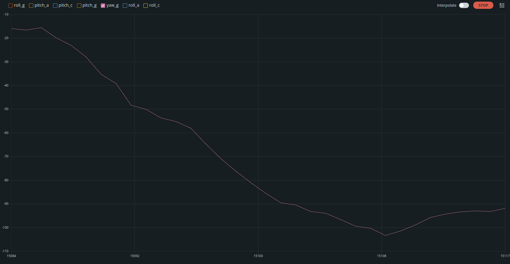

Lab 4
In lab4, the IMU had to be set up in order to gather position data for the robot. I also had to integrate the IMU data collection with the TOF sensor to send all important sensor data over bluetooth.
Set up the IMU
First, the IMU had to be hooked up to the artemis through the QWIIC connectors.
 To set up the IMU in software, the ICM_20948 library had to be installed in the arduino ide in order to easily use the IMU with the artemis.
To set up the IMU in software, the ICM_20948 library had to be installed in the arduino ide in order to easily use the IMU with the artemis.
AD0_VAL
One important variable in the example code is AD0_VAL. The AD0_VAL represents the last bit of the i2c address of the IMU. This value is only supposed to be 0 if the ADR jumper is closed, the value is 0. The ADR jumper is not closed, so the value is 0.
Acceleration and Gyroscope
When printing out the data from the demo, the accelerometer data shows the acceleration around each coordinate axis. The gyroscope measures the velocity around each coordinate axis. By calculating the angles between accelerations around each axis, the position of the object can be found. The position can also be found by using measured velocity around each axis to figure out the new position of the object, but this can lead to drift. Here is a video showing the output of manipulating the example code.
As can be seen from the video, when an axis is face perpendicular to the ground, the accel value goes to .001, but if it’s parallel, then its value is 0. The gyroscope value increases around an axis as the IMU moves faster around a given axis.
Accelerometer
From class, we used the tangent between accelerations in each coordinate axis to figure out the angle the object is around the coordinate axis.
\(Roll_{accelerometer} = atan(a_x,a_z)\)
\(Pitch_{accelerometer} = atan(a_y,a_z)\)
, so using IMU.accX, IMU.accY, IMU.accZ as x y and z respectively, the pitch and roll could be calculated with
pitch_a = atan2(myICM.accY(), myICM.accZ()) * 180 / M_PI;
roll_a = atan2(myICM.accX(), myICM.accZ()) * 180 / M_PI;
yielding these results as I placed the IMU at various positions in order to make the roll or pitch go to a specific angle. The y-axis is in degrees.
IMU at \(\text{0}^\circ\) roll and pitch IMU at \(+90^\circ\) roll IMU at \(-90^\circ\) roll IMU at \(+90^\circ\) pitch IMU at \(-90^\circ\) pitch
Accelerometer accuracy
Here is a display of a 5s recording of 80 data points of the IMU pitch at each angle (-90,0,90 degrees).
The arrays at the top are the means and standard deviations of each angle respectively.
 As can be seen. The accelerometer provides great accuracy with the low pass filter (discussed later), but has a mean that is slightly off. 90 degrees is 83 degrees and 0 degrees
yields -3 degrees. I chalked this difference up to my building not being level as my apartment is slightly crooked and the offset was consistent with the tilt of the house.
As can be seen. The accelerometer provides great accuracy with the low pass filter (discussed later), but has a mean that is slightly off. 90 degrees is 83 degrees and 0 degrees
yields -3 degrees. I chalked this difference up to my building not being level as my apartment is slightly crooked and the offset was consistent with the tilt of the house.
Here is the same analysis for roll. The accuracy is slightly better being generally 1 degree within the expected angle.
Noise in the frequency spectrum analysis
When collecting accelerometer data with no large noise source around, the data yielded this FFT, When collecting data with the car motors being driven at max speed next to it, the data produced this FFT As can be seen, there is after about 20Hz. This means the cutoff frequency should be around 15Hz
Therefore from class,
\(\alpha = \frac{T}{T+RC}\)
\(f_{c} = \frac{1}{2\pi RC}\)
,so
\(RC = \frac{1}{2\pi f_c}\)
\(\alpha = \frac{T}{T+\frac{1}{2\pi f_c}}\), where
\(T = \frac{1}{\text{sample rate}}\), so since
\(T \simeq \frac{5s}{80} = 0.0625s\),
\(\alpha = \frac{0.0625s}{0.0625s+\frac{1}{2\pi*20Hz}} = 0.484\)
Unfortunately, with this low pass filter put in, the FFT doesn’t yield much change.
This is most likely due to the low magnitude of this noise since the IMU already has a low pass filter according to this figure from the datasheet. I changed the alpha value to about .1 for a much lower frequency cut off.
In code, this low pass filter is implemented as discussed in class as
const float alpha = 0.1;
pitch_a_LPF[n] = alpha * pitch_a + (1 - alpha) * pitch_a_LPF[n - 1];
pitch_a_LPF[n - 1] = pitch_a_LPF[n];
roll_a_LPF[n] = alpha * roll_a + (1 - alpha) * roll_a_LPF[n - 1];
roll_a_LPF[n - 1] = roll_a_LPF[n];
Gyroscope
For the gyroscope, this uses the change in angle around each axis the glean the position of the object around each axis by using this equation from class,
\(\theta_g = \theta_g - \text{gyr_reading}*dt\)
so the angles were calculated like this
dt = (micros() - last_time) / 1000000.;
last_time = micros();
pitch_g = pitch_g + myICM.gyrX() * dt;
roll_g = roll_g - myICM.gyrY() * dt;
yaw_g = yaw_g + myICM.gyrZ() * dt;
If you compare the output of the gyroscope and filtered accelerometer data, you get these results.  As can be seen, the gyroscope data follows the same pattern as the accelerometer data, but is offset and this offset grows as time goes on.
When I decreased the sample rate, the gyroscope became much more choppy and updated to the new angles much more slowly, so keeping the gyroscope readings at the maximum possible sample rate was important for accuracy.
Complementary Filter
To make the complementary filter, the equation from class,
\(\theta = (\theta + \theta_g * dt)(1-\alpha) + \theta_a \alpha\)
was used
in code, this was implemented as
roll_c = (roll_c + myICM.gyrY() * dt) * 0.9 + roll_a * 0.1;
pitch_c = (pitch_c + myICM.gyrX() * dt) * 0.9 + pitch_a * 0.1;
Here is another accuracy analysis like that done on the other sensors but for the complementary filter
These videos also show the filter’s resistance to small vibrations as well as showing its range
Here, you can see small vibrations in the IMU don’t cause the measurement to move more than a few degrees.
This video shows how the filter has a range of 180 degree as it goes down to -180 after surpassing 180 degrees across both axis.
Speed of sampling
After speeding up the sensor data collection by removing print statements and making the collection interrupt based. Inside of a data collection loop, I can get a delay of about 0.04s between collections, so a 25Hz sampling rate. This is limited mostly by the fact that I collect sensor data once all sensors are available so one sensor could be the bottleneck. The data collection was pseudo-interrupt based by only collecting data after myICM.dataReady() was true.
Bluetooth integration
To integrate the IMU with the bluetooth code. The same procedure as explained in Lab3 was done, but this time using the data collection mechanism in the IMU_DEMO code, so a command GET_AGMT_5s_RAPID command was made. When this command is received, the calculations explained previously as well as the TOF data collection in lab3 is done. These are all sent in a string. like this,
tx_estring_value.append("T:");
tx_estring_value.append(timeBuff[i]);
tx_estring_value.append("|");
tx_estring_value.append("P:");
tx_estring_value.append(pitchBuff[i]);
tx_estring_value.append("|");
tx_estring_value.append("R:");
tx_estring_value.append(rollBuff[i]);
tx_estring_value.append("|");
tx_estring_value.append("Y:");
tx_estring_value.append(yawBuff[i]);
tx_estring_value.append("|");
tx_estring_value.append("D1:");
tx_estring_value.append(dist1Buff[i]);
tx_estring_value.append("|");
tx_estring_value.append("D2:");
tx_estring_value.append(dist2Buff[i]);
and the data is collected like this
cnt = 0;
currTime = (int)millis();
Serial.println("Allocated arrays");
while ((int)millis() - currTime < 5000)
{
check = true;
#if TOF1 == 1
check = check && vl53_1.dataReady();
#endif
#if TOF2 == 1
check = check && vl53_2.dataReady();
#endif
if (myICM.dataReady() && check && cnt < BUF_SIZE)
{
myICM.getAGMT();
// The values are only updated when you call 'getAGMT'
// printRawAGMT( myICM.agmt ); // Uncomment this to see the raw values, taken directly from the agmt structure
setAGMT(&myICM); // This function takes into account the scale settings from when the measurement was made to calculate the values with units
// new measurement for the taking!
timeBuff[cnt] = (int)millis();
yawBuff[cnt] = yaw_g;
rollBuff[cnt] = roll_c;
pitchBuff[cnt] = pitch_c;
#if TOF1 == 1
dist1Buff[cnt] = vl53_1.distance();
if (distance_1 == -1)
{
// something went wrong!
Serial.print(F("Couldn't get distance: "));
Serial.println(vl53_1.vl_status);
return;
}
// data is read out, time for another reading!
vl53_1.clearInterrupt();
#endif
// new measurement for the taking!
#if TOF2 == 1
dist2Buff[cnt] = vl53_2.distance();
if (distance_2 == -1)
{
// something went wrong!
Serial.print(F("Couldn't get distance: "));
Serial.println(vl53_2.vl_status);
return;
}
// data is read out, time for another reading!
vl53_2.clearInterrupt();
#endif
cnt++;
}
}
Hear you can see the data is in buffers rather than just a value. This is because of the speed of sensor data collection. To produce the fastest sampling rate, collection was completed before sending the array, so a buffer was made for each value and the values were collected and then sent to the python code index by index. The data was stored in seperate arrays rather than one large array as if it’s later decided to capture IMU data at a different time than TOF data, another time array can be added. Another issue is also the types of the values. Distance values are floats, but IMU values are int16_t, so an array with a constant type would be hard to manage. When I first allocated the arrays, I allocated 1000 values for each array, but with some values as floats and others as int16_t, these 4 byte values were too large and I ran into a stack overflow. 100 values for each array sufficed as the loop could only capture 80 values and this was only about 19200Kb, much less than the memory of the artemis as opposed to the 192000Kb if a 1000 length array were used. With the 384kB internal data, this is 3840s of data if all arrays were floats at a 25Hz sample rate, so the artemis has plenty of memory for data collection.
Here is an example of data collected over bluetooth.

And here is an example video of the data collection
One problem I had was that after a data collection or two, the first few seconds of data would be slowly transitioning from the roll and pitch values from last data collection to the current roll and pitch value. To remedy this, after the command was received, the artemis code would read but not store data from the sensors for about 50 cycles which would allow the sensors to stabilize before data collection.
for (int i = 0; i < 50; i++)
{
while (!myICM.dataReady())
{
}
myICM.getAGMT();
setAGMT(&myICM); // This function takes into account the scale settings from when the measurement was made to calculate the values with units
}
Batteries
There are three batteries I was given, two 650mhAh batteries and a 850mhAh battery. The 650 battery is for the artemis as the artemis doesn’t consume much power, but the 850mhAh battery is for the motor drivers that will later be inserted as the motor drivers require a larger amount of power.
Artemis Connected to battery
Record a Stunt
Stunt with artemis
You can see the data from the stunt in the video, but these graphs make it more clear. As can be seen from this graph, the roll and pitch oscillate slightly as the slightly off horizontal imu rotates around the z axis. The yaw from the gyroscope though offset can be seen decreasing and increasing as the car rotates around its axis. Unfortunately, one of the TOF sensors didn’t show in the graph, but the other can be seen measuring about .1m which is facing towards the ground most likely as the side sensor points towards the ground. Near the end of the video, the TOF sensor falls onto the ground thus bringing the distance measurement close to 0.
The TOF sensors have various errors with weak pin connections and such, so I made the final modification of macros to setup or collect data from the TOF sensors only if the macros TOF1, and TOF2 were defined as 1.